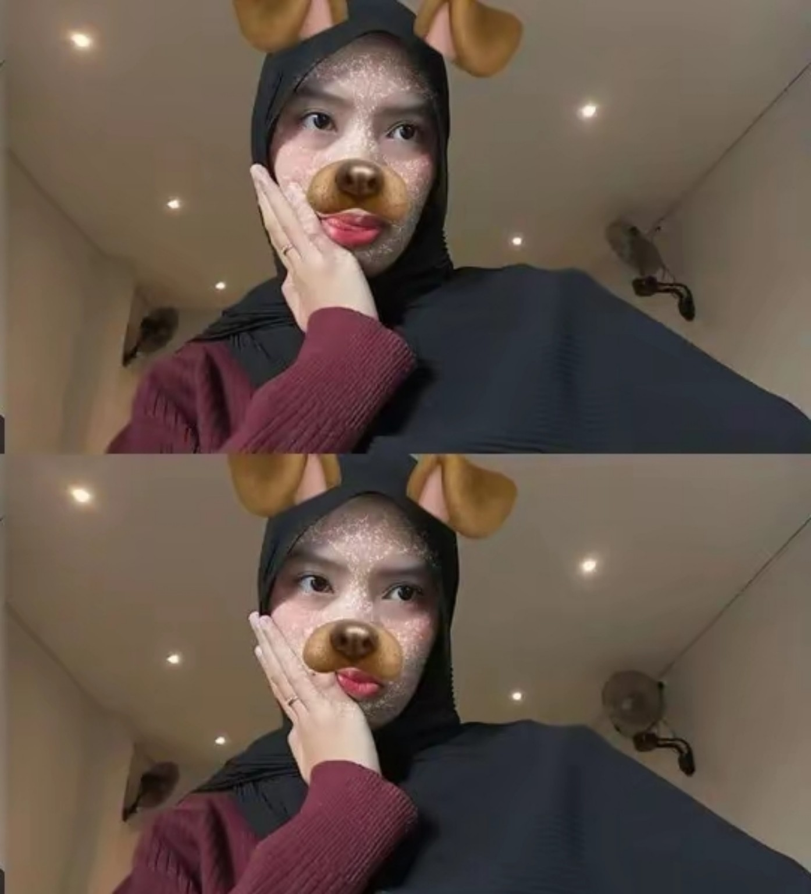
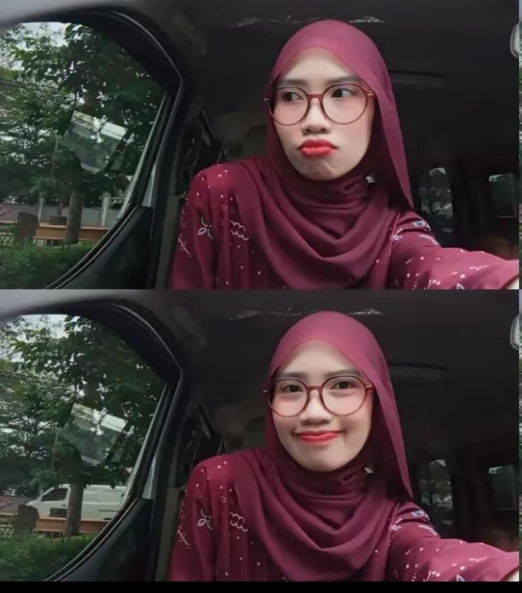
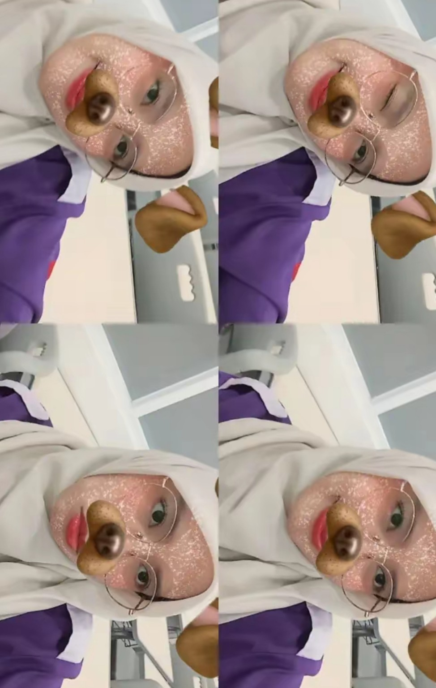
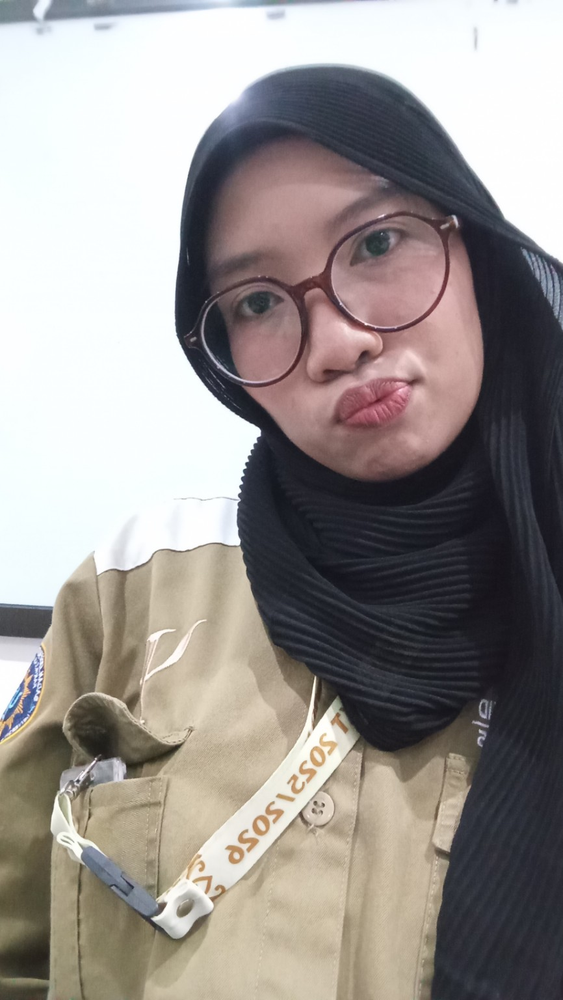
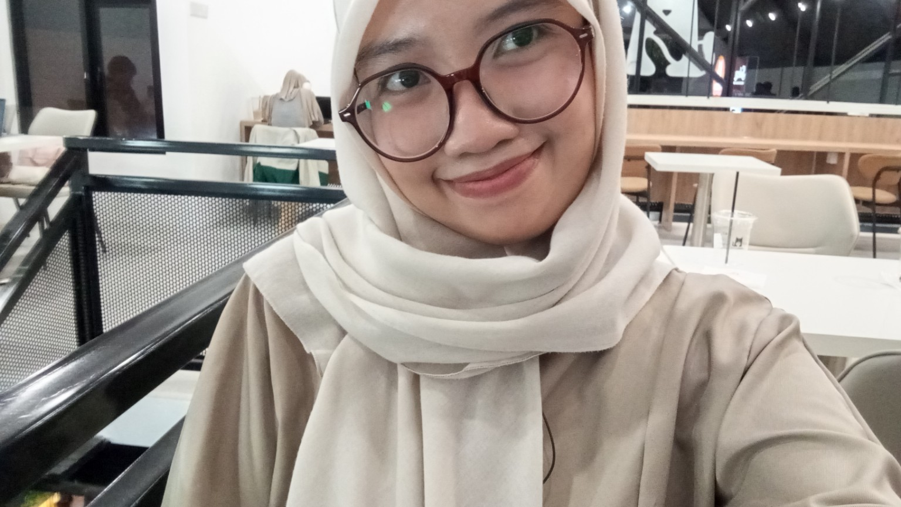

01
bahkan dengan filter absurd pun, kamu tetap berhasil bikin aku senyum.
untuk seseorang yang entah bagaimana
selalu berhasil bikin hari terasa lebih hangat.
Aku mungkin nggak selalu punya cara yang paling bagus buat nunjukin apa yang aku rasain. Kadang aku cuma bisa diem, kadang malah bercanda di saat yang seharusnya aku ngomong serius. Tapi kalau ada satu hal yang pengin aku pastiin kamu tahu, itu adalah: aku bersyukur pernah dipertemukan sama kamu.
Dari sekian banyak orang yang bisa lewat begitu saja di hidup kita, kamu adalah salah satu orang yang akhirnya punya tempat sendiri. Bukan karena kamu harus jadi seseorang yang sempurna, tapi karena ada banyak hal kecil dari kamu yang tanpa sadar aku suka. Cara kamu cerita, cara kamu tersenyum, cara kamu menjalani hari, bahkan hal-hal sederhana yang mungkin menurut kamu biasa saja.
Aku suka kenyataan bahwa ketika mengingat kamu, yang muncul bukan cuma satu momen besar. Justru hal-hal kecil. Potongan percakapan, ekspresi wajah, foto-foto random, dan momen ketika kamu cuma jadi dirimu sendiri. Entah kenapa, hal-hal sederhana itu justru terasa paling berharga.
Jadi di hari ini, aku nggak mau cuma bilang “selamat” lalu selesai. Aku mau kamu tahu bahwa kamu layak mendapatkan banyak hal baik. Layak disayangi dengan tenang, dihargai tanpa harus meminta, didengarkan tanpa harus menjelaskan berkali-kali, dan dipertemukan dengan orang-orang yang bisa melihat betapa berharganya kamu.
Kalau suatu hari kamu lagi capek, semoga kamu ingat bahwa kamu nggak harus selalu kuat. Kalau suatu hari semuanya terasa terlalu berat, semoga kamu masih punya alasan kecil untuk tersenyum. Dan kalau suatu hari kamu lupa betapa berharganya dirimu, semoga ada seseorang yang mengingatkanmu.
Dan untuk sekarang, biarkan aku jadi salah satu orang yang mengingatkan itu: aku senang kamu ada. Terima kasih sudah menjadi kamu. Nggak perlu berubah jadi siapa-siapa untuk pantas dicintai. Tetaplah jadi kamu, dengan segala cerita, tawa, lelah, dan sisi kecil yang mungkin nggak semua orang tahu. Karena justru dari semua itu, kamu menjadi seseorang yang begitu berarti.
— dari seseorang yang diam-diam selalu berharap
kamu baik-baik saja, di mana pun kamu berada.
Karena ternyata, menyimpan kenangan kecil juga bisa terasa seperti menyimpan rumah.

bahkan dengan filter absurd pun, kamu tetap berhasil bikin aku senyum.

yang satu ini kelihatannya cuma foto biasa. tapi entah kenapa aku suka.

kamu + kacamata + muka random = tetap kamu yang aku kenal.

ada sisi kamu yang tenang seperti ini, dan aku selalu suka melihatnya.

senyum yang sederhana, tapi cukup untuk bikin satu hari terasa berbeda.
Semoga setelah hari ini, kamu tetap punya banyak alasan untuk tersenyum. Semoga langkahmu selalu dipertemukan dengan hal-hal baik, dan semoga kamu nggak pernah lupa bahwa keberadaanmu punya arti.
Aku nggak tahu akan ada berapa banyak cerita yang masih menunggu kita di depan. Tapi untuk cerita yang sudah pernah ada, aku akan selalu menganggapnya sebagai sesuatu yang layak disyukuri.
Happy My Girl Day, kamu.
Stay happy. Stay you.